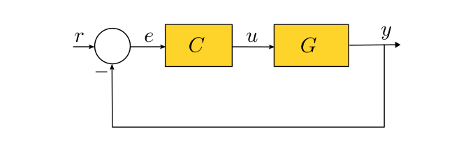
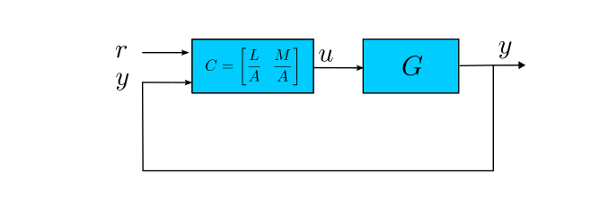

set_controller
DCMotor.set_controller — Function
set_controller(sys::MotorSystem, controller; output=:angle, deadzone=get_deadzone())Programa un controlador en la plataforma DCMotor. El controlador se define como una función de transferencia en el dominio de Laplace s, la cual es automáticamente discretizada.
Esta función permite programar un controlador estándar de 1 grado de libertad (1-GDL), como el mostrado en la siguiente figura:

A su vez, esta misma función permite programar un controlador de 2 grados de libertad, como se muestra a continuación:

Argumentos
sys::MotorSystem: objeto que representa la plataforma DCMotor.controller: función de transferencia continua (ControlSystems.TransferFunction) en el dominio de Laplaces.Si $C$ es 1x1 (una entrada y una salida), se interpreta como controlador de 1 grado de libertad:
$u = C·(r - y)$
Si $C=[C_1\quad C_2]$ es una matriz 1×2 (dos entradas y una salida), se interpreta como controlador de 2 grados de libertad:
$u = C_1·r - C_2·y$
donde $C_1=\frac{L}{A}$ es la primera columna y $C_2=\frac{M}{A}$ es la segunda.
Argumentos de palabra clave
output::Symbol=:angle: variable controlada,:angle(ángulo) o:speed(velocidad angular).deadzone: zona muerta de la señal de control, en voltios. Por defecto, usa la encontrada por el modelo estático.
Retorna
nothing. Imprime un mensaje de confirmación en consola.
Notas
- Esta función admite tanto controladores de 1-GDL como de 2-GDL.
- El controlador se convierte a espacio de estados para su implementación digital. Se discretiza usando el método bilineal (Tustin) con un periodo de muestreo de 0.02 segundos.
- Se implementa un mecanismo anti-windup basado en un observador, cuya ganancia se calcula mediante el filtro de Kalman.
Ejemplos
Ejemplo 1: controlador de un grado de libertad (1-GDL)
Supongamos que queremos implementar un controlador para el ángulo del DCMotor definido por la siguiente función de transferencia:
$C(s)=\frac{0.1071s + 2.2463}{s + 35.5428}$
Para ello usamos el siguiente código:
using DCMotor
sys = MotorSystem();
s = tf("s");
C = (0.1071s + 2.2463)/(s + 35.5428);
set_controller(sys, C; output=:angle)
"Controlador cargado en DCMotor"Ejemplo 2: controlador de dos grados de libertad (2-GDL)
Supongamos que queremos implementar un controlador de 2-GDL para el ángulo del DCMotor, definido por la siguientematriz de transferencia:
$C(s)=\begin{bmatrix} \frac{0.0374s + 2.6207}{s + 69.5428} & -\frac{0.0279s + 2.6207}{s + 69.5428} \end{bmatrix}$
Para ello usamos el siguiente código:
using DCMotor
sys = MotorSystem();
s = tf("s");
C1 = (0.0374s + 2.6207)/(s + 69.5428)
C2 = -(0.0279s + 2.6207)/(s + 69.5428)
C = [C1 C2]
set_controller(sys, C; output=:angle);
"Controlador cargado en DCMotor"